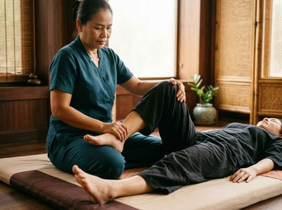
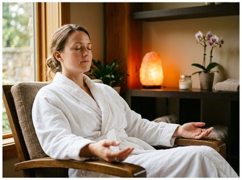

Lyle Hill sits at the West End of Greenock, one of Inverclyde's most distinctive residential areas, with sweeping views across the Firth of Clyde and a quieter, more spacious character than the town centre below.
If you're looking for thai massage in Lyle Hill Greenock, Thai Massage Greenock on South Street is your closest dedicated massage therapy studio, just a short journey down into the heart of Greenock.
The West End draws a mix of families, professionals, and long-term residents who value the area's relative calm and easy access to both town and the open hill above. Whether you're dealing with the physical strain of a long commute, tension built up from desk work, or simply in need of genuine restorative care, a session at Thai Massage Greenock is a practical and worthwhile investment in your wellbeing.

Lyle Hill's residential streets connect directly down to Greenock's town centre via Lyle Road and the surrounding West End routes. South Street, where Thai Massage Greenock is based, is easily reachable on foot or by a short bus or taxi ride, making it a genuinely convenient option for anyone living in this part of Greenock. You can book your session online in advance and pick a time that works around your schedule.
Thai Massage Greenock offers a full range of authentic Thai treatments, each delivered personally by Jariya Malone, a therapist trained at Bangkok's world-renowned Wat Po temple. Whether you need deep relief from muscle tension, targeted sports recovery, or a calming aromatherapy experience, there is a treatment suited to you.
From Lyle Hill, the most straightforward option is to walk or drive down Lyle Road towards the town centre, which brings you directly into the West End and central Greenock. South Street is a short distance from there, making the journey quick and simple by foot if you're coming from the lower end of the hill.
If you prefer public transport, Fort Matilda station sits close to the Lyle Road area and connects to Greenock West by ScotRail in around two minutes. From Greenock West, South Street is within comfortable walking distance. McGill's bus services also run through the West End and town centre routes for anyone preferring the bus.
By car, the drive from Lyle Hill to our address at 0/2 16 South Street, Greenock, PA16 8UE takes just a few minutes, and parking is available nearby on South Street and the surrounding streets.
Thai Massage Greenock is a therapist-led practice, not a chain or franchise. Jariya Malone trained at Wat Po in Bangkok, the birthplace of traditional Thai massage, and has been delivering personalised treatments to clients across Inverclyde for years. Every session begins with a conversation about how you're feeling, and Jariya keeps detailed notes to ensure each visit builds on the last.

That personal approach makes a genuine difference, particularly for clients who have tried less tailored alternatives and not seen the results they were looking for. Book a treatment online to experience what authentic, personalised Thai massage therapy actually feels like.
Lyle Hill takes its name from Provost Abram Lyle, the sugar refiner and co-founder of what later became Tate and Lyle, who was serving as Greenock's Provost when Lyle Road was constructed between 1879 and 1880. The hill's highest point, Craigs Top, reaches 426 feet above sea level and offers remarkable views across the Clyde towards Gourock and beyond. You can read more about its history at Lyle Hill on Wikipedia.
Thai Massage Greenock is located on South Street in central Greenock, a short distance from the Lyle Hill and West End area. By car the journey takes just a few minutes via Lyle Road. If you're walking from the lower part of Lyle Hill, the walk into central Greenock is manageable in around 10 to 15 minutes depending on your starting point.
The nearest train station to the Lyle Hill area is Fort Matilda, which connects to Greenock West by ScotRail in approximately two minutes. From Greenock West, South Street is a short walk. McGill's bus services also serve the West End and town centre routes. Alternatively, the drive from Lyle Hill to South Street takes just a few minutes by car.
Same-day appointments are available subject to availability. The easiest way to check and secure a time is through the online booking form on the Thai Massage Greenock website. It is worth booking in advance where possible, particularly for popular evening and weekend slots.
If you regularly walk the hill or spend time on your feet, Thai Foot Massage is a natural starting point, using reflexology-based techniques on the feet and lower legs to ease fatigue and improve circulation. Thai Sports Massage is also an excellent choice for anyone physically active, targeting muscle recovery and helping maintain range of motion. Jariya will discuss what your body needs at the start of your session.
Thai Massage Greenock offers appointments including evenings and weekends to fit around working and family life. The best way to see current availability is to check the booking form online, which shows live appointment slots. You can also call the studio on 01475 600868 to speak directly with Jariya.